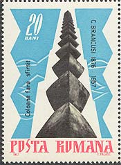
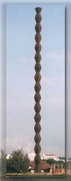
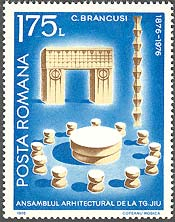

Constantin Brancusi
The Targu Jiu Assembly
In 1936 the Romanian government proposed to Brancusi to create at Targu Jiu a monument in the memory of the heroes of the W.W.I. Brancusi will accept the challenge, and will work during 3 years at this sculptural and architectural project. In the Gate of Tirgu Jiu - known also as the Gate of the Kiss - the embrace of the two bodies, like the two halves of a seed, assume the perfect shape of a circle. Though the circle naturally evokes the symbol of the sun, here it once again betrays its origin in the eye of his 1925 Kiss, the emblem of reason.
In this succession of works, the Endless Column represents the quintessence of the artist's creative conception, fulfilling an early desire of his (an Architectural Project, dating from 1918, the same year when he carved the Endless Column in wood that is today in the Mary Sisler Collection, Palm Beach, Florida), to accomplish a sculpture transformed into architecture.

The significance of the Column cannot be severed from that of the entire statuary group of which this monument is one of the elements. " Son portrait par lui-meme", as Jean Arp labeled it, this vastest sculptural ensemble created in our century, is dedicated to the memory of the soldiers fallen in the First World War. Thirty years after The Prayer, Brancusi returned to his homeland, to honor the dead, with the traditional piety of the Romanian peasant.
The presence in this ensemble of a Gate of the Kiss is particularly significant. The conclusion drawn by some analysts that it pictures love as the ultimate aspiration in death is to my mind unjustified, the message is rather that of glory whose supreme achievement is love, expressed in the shape of a triumphal arch (whose proportions are related to those of the Roman arches, such as that of Janus Quadrifons). The motif of the embrace appears in a simplified form, assuming the design of both a germinating seed and the eye, symbol of vigil and universal comprehension. Love is symbolically placed in the centre of the ensemble, glorifying the life beyond death of the heroes, love defeating death. The seeds ready to germinate are the emblem of everlasting fertility.


The Table of Silence, the work that terminates the line of perspective of the ensemble, is the result of meditations traceable in some of Brancusi's earlier works. Its form suggest "the closed contour of a circle that gathers, approaches and unites". This shape recalls the wooden base of the Sleeping Child of 1908 as well as the round stone serving as pedestal to Ledo and the Seal. Encircling this round-shaped table are twelve stone stools set like the hours on the face of a clock. As part of a monumental group dedicated to the memory of war heroes, the form of the Table recalls that of the Dacic Sanctuary of Sarmizegethusa. An ancient civilization worshipping the Sun built its temples on a round-shaped foundation which, as in other old civilizations, symbolized perfection.
IPlease point on stamps with the mouse for more information. For the main source of the presentation, please click here.


| Published:
05/20/2002. Revised:
11/08/06. Copyright © 2002 - 2006 by Victor Manta, Switzerland. All rights reserved worldwide. |